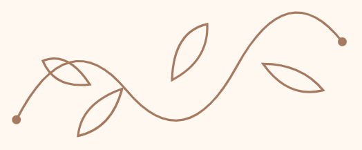

Psicóloga desde 2019
Pós-graduada em saúde mental e desenvolvimento humano
Mestranda em Psicologia
Encantada pela Psicanálise
Adoro conhecer novos lugares
Apaixonada por leitura
A clínica não é só um trabalho, mas também meu lugar de prazer
Em dias de estresse, gosto de sair para ver o mundo e socializar

Um espaço de escuta e acolhimento para diferentes momentos da sua vida
Compreender sentimentos e experiências.
Refletir sobre vínculos, conflitos e relações afetivas.
Explorar sua história, emoções e questões pessoais.
Encontrar espaço para elaborar experiências de perda.
Conversar sobre sobrecarga e desafios cotidianos.
Acolher sentimentos, dúvidas e dificuldades pessoais.
Flexibilidade para escolher a modalidade que melhor se adapta à sua rotina e às suas necessidades
As sessões geralmente acontecem uma vez por semana, podendo ser mais frequentes conforme a necessidade.
O primeiro passo pode começar com uma simples conversa.
Entre em contato para conhecer as possibilidades de acompanhamento psicológico
Entrar em contato